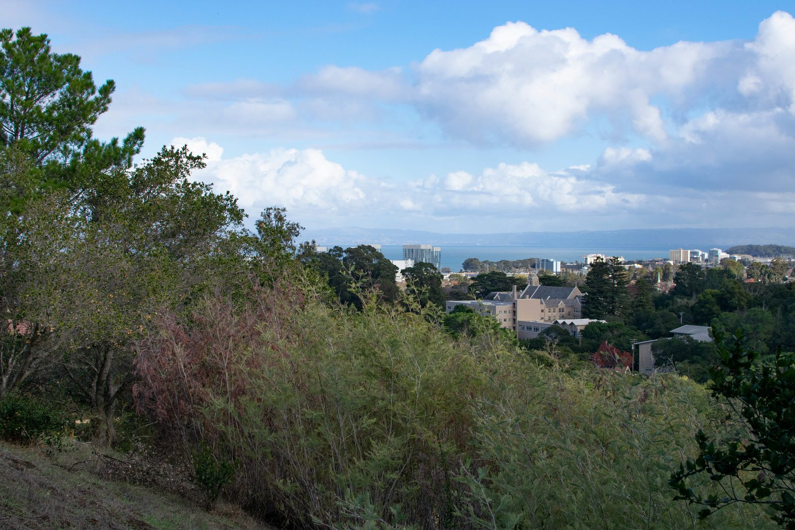

Specialized expertise at the intersection of design, regulation, and environmental stewardship
PreVision Design has developed unparalleled proficiency in shadow analysis and Section 295 compliance, serving jurisdictions from San Francisco and Oakland to Solano County and beyond. Our shadow consulting practice is built on over a decade of experience navigating California's most demanding regulatory requirements.
We specialize in quantitative shadow impact assessments that inform critical planning decisions for projects ranging from modest residential additions to major institutional facilities. Our analyses meet the standards of San Francisco Planning, Oakland Planning, SF Recreation & Parks, the Port of San Francisco, OCII, and UC Berkeley.

Our visual simulation and photomontage services create compelling, accurate visualizations that communicate complex design proposals to stakeholders, planning commissions, and communities. We combine rigorous technical methodology with artistic sensibility to produce photorealistic representations that facilitate informed decision-making.
From airport shoreline improvements to transformative community developments, our visual simulations have supported projects of every scale across California. Each simulation is built on precise 3D modeling, carefully matched site photography, and meticulous photo compositing.

Our daylight analysis services evaluate natural light access conditions for proposed developments and their surrounding environments. Using advanced 3D modeling and simulation tools, we quantify how new construction will affect daylight availability for adjacent properties, public spaces, and interior environments.
Daylight studies are increasingly required as part of environmental review processes and design guidelines. Our analyses provide the technical foundation for informed decisions about building massing, setbacks, and design modifications that balance development goals with daylight preservation.

PreVision Design provides independent technical review of shadow studies, visual simulations, and environmental analyses prepared by other consultants. Our deep expertise in methodology, regulatory standards, and technical best practices makes us a trusted resource for quality assurance and verification.
Whether retained by planning agencies, developers, or community organizations, our peer review services ensure that technical analyses meet applicable standards and accurately represent project impacts. We provide clear, well-documented findings that support defensible decision-making.

PreVision Design has developed proprietary software tools that enable rapid, accurate modeling of complex shadow phenomena. Our workflow integrates advanced 3D modeling, GIS analysis, field observation, and custom visualization techniques to deliver comprehensive technical documentation.
Our tools are designed to meet the most demanding regulatory requirements while providing efficiency gains that benefit our clients' project timelines and budgets.

Parasolv is our proprietary shadow analysis platform purpose-built for California's regulatory environment. It enables rapid, accurate computation of shadow impacts compliant with Section 295, CEQA, and jurisdictional planning standards. The platform generates quantitative shadow calculations, location-duration heatmaps, shadow fan diagrams, and animated shadow sequences directly from 3D building models.
By automating the most computation-intensive aspects of shadow analysis, Parasolv allows us to deliver faster turnaround times, explore more design alternatives, and produce more comprehensive results than traditional methods.
Contact us to discuss your project's analytical and consulting needs.
Get in Touch